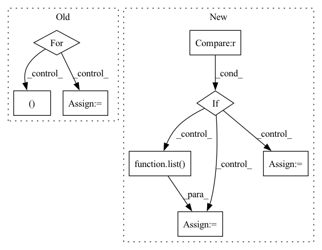

Pattern ID :6348
Before Change
def sample_iter(self):
for path in tqdm(self.raw_paths, desc="Files"):
molecules = list(h5py.File(path).values())
for mol in tqdm(molecules, desc="Molecules", leave=False):
z = pt.tensor(mol["atomic_numbers"], dtype=pt.long)
fq = pt.tensor(mol["formal_charges"], dtype=pt.long)
q = fq.sum()
for conf in mol["conformations"].values():
// Skip failed calculations
if "formation_energy" not in conf:
continue
assert conf["positions"].attrs["units"] == "Å"
pos = pt.tensor(conf["positions"], dtype=pt.float32)
assert pos.shape == (z.shape[0], 3)
assert conf["formation_energy"].attrs["units"] == "eV"
y = pt.tensor(conf["formation_energy"][() ], dtype=pt.float64)
assert y.shape == ()
assert conf["forces"].attrs["units"] == "eV/Å"After Change
assert "name" in h5.attrs
mols = h5.items()
load_confs = self._load_confs_1_0
elif version == "2.0" :
assert len(h5.keys()) == 1
mols = list( h5.values()) [0].items()
load_confs = self._load_confs_2_0
else:
raise RuntimeError(f"Unsuported layout verions: {version}")
In pattern: SUPERPATTERN
Frequency: 3
Non-data size: 8
Instances Fragment ID: 22130836
Project Name: torchmd/torchmd-net
Commit Name: d23e6500f2cef1fa56d6c99ce5fdb983f1379bca
Time: 2022-10-28
Author: peastman@stanford.edu
File Name: torchmdnet/datasets/ace.py
M Class Name: Ace
N Class Name: Ace
M Method Name: sample_iter(2)
N Method Name: sample_iter(1)
M Parent Class: Dataset
N Parent Class: Dataset
M File Name: torchmdnet/datasets/ace.py
N File Name: torchmdnet/datasets/ace.py
M Start Line: 72
M End Line: 123
N Start Line: 144
N End Line: 206
Before Change
def get_batched_triplet_input(spk_to_utts, batch_size):
Get batched triplet input for PyTorch.
input_arrays = []
for _ in range(batch_size):
anchor, pos, neg = get_triplet_features_trimmed(
spk_to_utts)
input_arrays += [anchor, pos, neg]
batch_input = torch.from_numpy(np.stack(input_arrays)).float()After Change
def get_batched_triplet_input(spk_to_utts, batch_size, pool=None):
Get batched triplet input for PyTorch.
fetcher = TrimmedTripletFeaturesFetcher(spk_to_utts)
if pool is None :
input_arrays = list( map(fetcher, range(batch_size)))
else:
input_arrays = pool.map(fetcher, range(batch_size))
batch_input = torch.from_numpy(np.concatenate(input_arrays)).float()
return batch_input
Fragment ID: 22130931
Project Name: wq2012/speakerrecognitionfromscratch
Commit Name: e67c23f2ca00afd978128a6d5d33d01fc3cead53
Time: 2022-05-09
Author: quanw@google.com
File Name: feature_extraction.py
M Class Name: AnonimousClass
N Class Name: AnonimousClass
M Method Name: get_batched_triplet_input(3)
N Method Name: get_batched_triplet_input(2)
M Parent Class:
N Parent Class:
M File Name: feature_extraction.py
N File Name: feature_extraction.py
M Start Line: 82
M End Line: 87
N Start Line: 86
N End Line: 93
Before Change
def sample_iter(self):
for path in tqdm(self.raw_paths, desc="Files"):
molecules = list(h5py.File(path).values())
for mol in tqdm(molecules, desc="Molecules", leave=False):
z = pt.tensor(mol["atomic_numbers"], dtype=pt.long)
fq = pt.tensor(mol["formal_charges"], dtype=pt.long)
q = fq.sum()
for conf in mol["conformations"].values():
// Skip failed calculations
if "formation_energy" not in conf:
continue
assert conf["positions"].attrs["units"] == "Å"
pos = pt.tensor(conf["positions"], dtype=pt.float32)
assert pos.shape == (z.shape[0], 3)
assert conf["formation_energy"].attrs["units"] == "eV"
y = pt.tensor(conf["formation_energy"][() ], dtype=pt.float64)
assert y.shape == ()
assert conf["forces"].attrs["units"] == "eV/Å"After Change
mols = None
load_confs = None
if version == "1.0" :
assert "name" in h5.attrs
mols = h5.items()
load_confs = self._load_confs_1_0
elif version == "2.0":
assert len(h5.keys()) == 1
mols = list( h5.values()) [0].items()
load_confs = self._load_confs_2_0
else:
raise RuntimeError(f"Unsuported layout verions: {version}") Fragment ID: 22130903
Project Name: torchmd/torchmd-net
Commit Name: d23e6500f2cef1fa56d6c99ce5fdb983f1379bca
Time: 2022-10-28
Author: peastman@stanford.edu
File Name: torchmdnet/datasets/ace.py
M Class Name: Ace
N Class Name: Ace
M Method Name: sample_iter(2)
N Method Name: sample_iter(1)
M Parent Class: Dataset
N Parent Class: Dataset
M File Name: torchmdnet/datasets/ace.py
N File Name: torchmdnet/datasets/ace.py
M Start Line: 72
M End Line: 123
N Start Line: 144
N End Line: 206
Before Change
@staticmethod
def log_objects(object_list, frame_number, file_path):
for object_item in object_list:
object_dict = {}
object_dict.update({"frame_number": frame_number})
for key, value in object_item.items():
if isinstance(value, (list, tuple )):
for i, item in enumerate(value):
object_dict.update({str(key) + "_" + str(i): item})
else:After Change
@staticmethod
def log_objects(object_list, frame_number, file_path):
if len(object_list) != 0 :
start = time.perf_counter()
object_dict = list( map(lambda x: prepare_object(x, frame_number), object_list))
if not os.path.exists(file_path):
with open(file_path, "w", newline="") as csvfile:
field_names = list(object_dict[0].keys()) Fragment ID: 22130870
Project Name: neuralet/smart-social-distancing
Commit Name: d8886c3554a6d7caaabfed394a4bd1f999393fc3
Time: 2020-04-13
Author: alpha.carinae29@gmail.com
File Name: libs/loggers/csv_logger.py
M Class Name: Logger
N Class Name: Logger
M Method Name: log_objects(3)
N Method Name: log_objects(3)
M Parent Class:
N Parent Class:
M File Name: libs/loggers/csv_logger.py
N File Name: libs/loggers/csv_logger.py
M Start Line: 30
M End Line: 51
N Start Line: 43
N End Line: 59